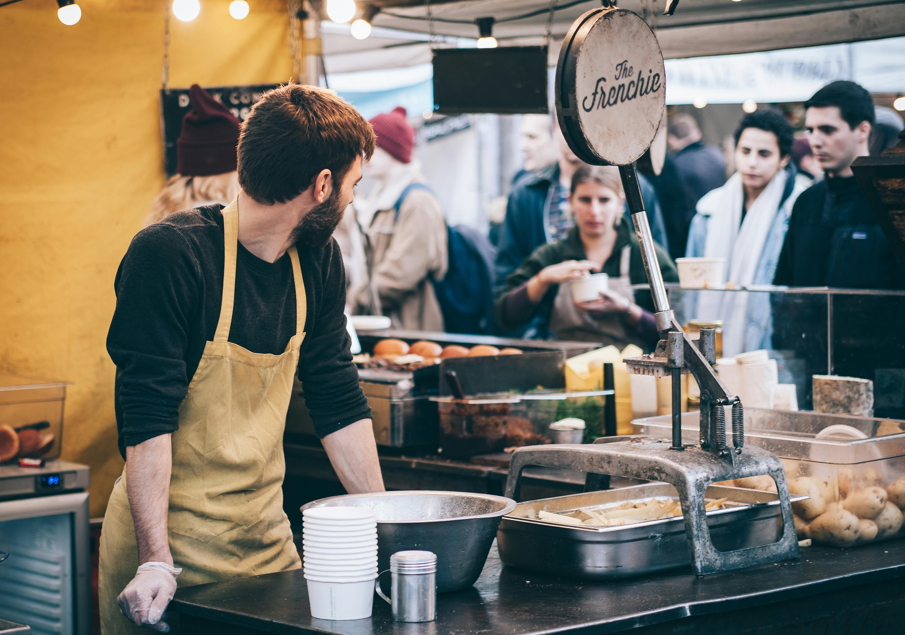

1/6
Non-GMO & Sustainably Grown – Our vendors are committed to natural farming practices that prioritize soil health, biodiversity, and environmental sustainability. Every fruit, vegetable, and herb available at our market is grown without synthetic pesticides, artificial fertilizers, or genetic modifications, ensuring you receive the purest and most flavorful ingredients possible. When you shop with us, you’re not just purchasing food—you’re investing in a healthier planet and a more sustainable future for agriculture.
2/6
Farm-Raised & Pasture-Fed – We believe that quality meat comes from animals that are raised with care and respect, which is why we proudly support vendors who practice ethical, pasture-based farming. Whether it’s grass-fed beef, free-range eggs, or humanely raised poultry, our farmers ensure that their livestock are given space to roam and are fed natural, nutrient-rich diets. This results in meat and dairy products that are not only superior in taste and nutrition but also aligned with humane and regenerative farming principles.

3/6
Artisan & Handmade Goods – Beyond fresh produce and meats, Blue Ridge Bounty is home to a diverse range of artisan and handcrafted products made by skilled local makers. From freshly baked sourdough bread and raw, unfiltered honey to handcrafted soaps, herbal tinctures, and woodwork, every item reflects the craftsmanship and dedication of our community. Whether you’re looking for a unique gift or a wholesome treat for yourself, you’ll find something special at our market—crafted with love and sourced from nature.
4/6
Know Your Farmers, Know Your Food – One of the greatest joys of shopping at a farmers market is the opportunity to meet the people behind the food. Our vendors are more than just sellers; they are passionate growers, bakers, and artisans who take pride in their work. When you shop at Blue Ridge Bounty, you can ask questions about how your food is grown, get tips on preparation, and gain a deeper appreciation for where your meals come from. Transparency and trust are at the heart of what we do, ensuring that every purchase you make is an informed and meaningful one.

5/6
We know how important it is to find exactly what you need, whether it’s organic greens, grass-fed beef, or locally made jams. That’s why we offer an easy-to-use search and filter feature that allows you to browse vendors and their products before you even arrive at the market. Simply type in what you’re looking for, and we’ll show you which vendors will have it at the next market day—making your shopping experience seamless and efficient.

❮
❯
6/6
Want to be a vendor? Are you a farmer, baker, or artisan looking to share your products with a community that values fresh, locally made goods? Becoming a vendor at Blue Ridge Bounty is a great way to connect with like-minded customers who appreciate quality and craftsmanship. Whether you’re an experienced farmer or just starting your small business, we provide a welcoming space for you to showcase your work. Learn more about vendor opportunities and how you can become part of our growing network of local producers.